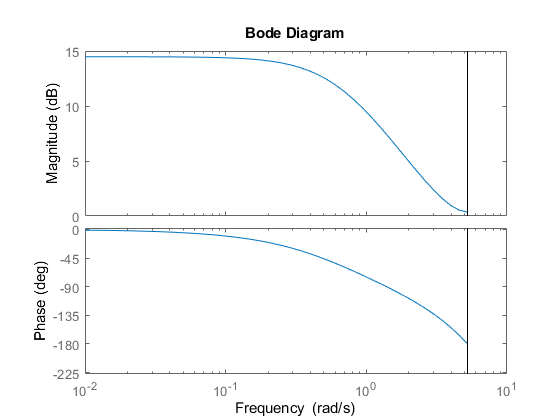

Contents
clear; close all; clc;
Problem 2
Ts = 0.6;
K = 1;
K = 1.68;
Gs = tf(2, [1 0.5])
Gz = c2d(Gs, Ts)
Gzcl = feedback(K*Gz, 0.04)
figure(1);
hold on;
grid on;
bode(Gzcl);
hold off;
Gs =
2
-------
s + 0.5
Continuous-time transfer function.
Gz =
1.037
----------
z - 0.7408
Sample time: 0.6 seconds
Discrete-time transfer function.
Gzcl =
1.742
----------
z - 0.6712
Sample time: 0.6 seconds
Discrete-time transfer function.

Problem 4
figure(3);
Ts = 0.001;
delta = 1/sqrt(2);
wo = 2*pi*60;
Gs = tf([1 0 wo^2],[1 2*delta*wo wo^2])
Gz1 = c2d(Gs, Ts, 'tustin')
opt = c2dOptions('method', 'tustin', 'PrewarpFrequency', 377)
Gz2 = c2d(Gs, Ts, opt);
Gz3 = c2d(Gs, Ts, 'matched')
Gzdiff = tf([0.682 -1.194 0.597], [1 -1.512 0.597]);
t = 0:Ts:0.1;
sig = sin(2*pi*60*t)+sin(2*pi*10*t);
subplot(2,2,1);
title('Backwards Difference Approximation');
xlabel('Time (s)');
ylabel('Response');
grid on;
hold on;
plot(t, sig);
[n,d] = tfdata(Gzdiff);
n = cell2mat(n);
d = cell2mat(d);
plot(t, filter(n,d, sig));
hold off;
subplot(2,2,2);
title('Bilinear Transform');
xlabel('Time (s)');
ylabel('Response');
grid on;
hold on;
plot(t, sig);
[n,d] = tfdata(Gz1);
n = cell2mat(n);
d = cell2mat(d);
plot(t, filter(n,d, sig));
hold off;
subplot(2,2,3);
title('Bilinear Transform with pre-warping');
xlabel('Time (s)');
ylabel('Response');
grid on;
hold on;
plot(t, sig);
[n,d] = tfdata(Gz2);
n = cell2mat(n);
d = cell2mat(d);
plot(t, filter(n,d, sig));
hold off;
subplot(2,2,4);
title('Matched Pole-Zero Method');
xlabel('Time (s)');
ylabel('Response');
grid on;
hold on;
plot(t, sig);
[n,d] = tfdata(Gz3);
n = cell2mat(n);
d = cell2mat(d);
plot(t, filter(n,d, sig));
hold off;
Gs =
s^2 + 1.421e05
------------------------
s^2 + 533.1 s + 1.421e05
Continuous-time transfer function.
Gz1 =
0.7953 z^2 - 1.481 z + 0.7953
-----------------------------
z^2 - 1.481 z + 0.5906
Sample time: 0.001 seconds
Discrete-time transfer function.
Gz3 =
0.7751 z^2 - 1.441 z + 0.7751
-----------------------------
z^2 - 1.478 z + 0.5868
Sample time: 0.001 seconds
Discrete-time transfer function.